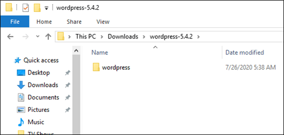
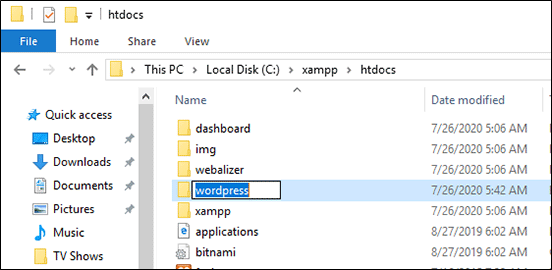
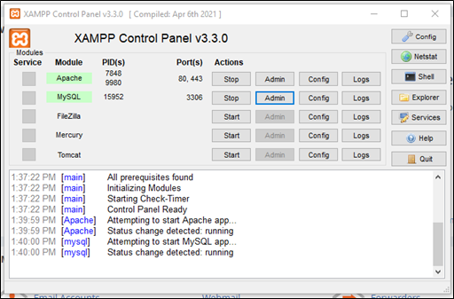
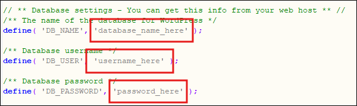
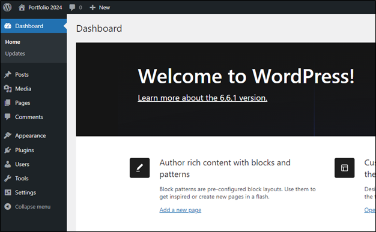

How to Create a Local Wordpress Environment with XAMPP (Windows)
XAMPP is a useful tool for setting up a testing or development instance of WordPress on a server.
Initial Setup
- Download and install XAMPP
- Download the latest version of WordPress
- Extract the WordPress zip folder that downloads onto your machine.
- Copy the wordpress folder located inside the extracted folder to [YOUR_XAMPP_INSTALL_DIRECTORY]/htdocs


NOTE: You can change the website folder name from wordpress to easily identify it (e.g. mysite).
Start the Required WordPress Services
- Open XAMPP.
- Start the Apache service by clicking Start in the Actions column in the XAMPP Control Panel.
- Start the MYSQL service the same way.
- Open PHPMyAdmin by clicking Admin in the Actions column for MySQL.

Create a Database and User for WordPress in PHPMyAdmin
To set up the database that WordPress will use for your website you’ll need to create a database and database users.
- In PHPMyAdmin click Databases.
- Enter a database name that will be used for your WordPress installation and click Create.
- In the tree view click the new database you just created.
- Click the Privileges tab.
- Click Add New User Account to add a new user.
- Enter a username and password.
- Under Global Privileges select Check All.
- Click Go.
Repeat steps 5-8 for as many database users you wish to create.

Import a Backup Database (Optional)
To import an existing database to use for your WordPress site complete the following steps:
- In PhpMyAdmin, on the left-hand side, click New to create a new database.
- Enter a database name.
- Select the Import tab.
- Under the File to Import section, click Browse and locate the file with the .sql extension you wish to import.
- Check or uncheck the desired boxes for Partial Import and Other Options.
- From the Format dropdown menu choose SQL.
- Click the Go button at the bottom of the screen to import the database.
Update wp-config.php
You’ll need to update the wp-config.php configuration file so WordPress can connect to the database you created. Complete the following steps:
- Navigate to C:\xampp\htdocs[YOUR_WORDPRESS_FOLDER] make a copy of wp-config-sample.php and rename it to wp-config.php.
- Open wp-config.php in a text editor.
- In wp-config.php define the values for the following fields:
- DB_Name
- Enter the name of the database you created in PHPMyAdmin.
- Username
- Enter the user name of the user you created in phpMyAdmin.
- Password
- Enter the password of the user you created in phpMyAdmin.
- DB_Name
- Save your changes.

Run the Wordpress Installer
Once the required previous steps have been completed you can run the WordPress installation wizard to install it on your machine.
- Ensure the Apache and MySQL services are running using XAMPP.
- In a web browser navigate to https://localhost/[WORDPRESS INSTALLATION FOLDER]/.
- The default URL is https://localhost/wordpress.
- Complete the WordPress installer.
- Log into WordPress using the credentials you defined when running the installer.
- You will see the WordPress dashboard.

Resolving Common Errors
The below section describes common errors users encounter when setting up WordPress using XAMPP.
Database Connection Error
Error Message: Error establishing a database connection.
Context: Error occurs when navigating to localhost/[WEBSITE FOLDER] in a browser.
Solution: Ensure you created a user in phpMyAdmin with full permissions. Ensure that in xampp\htdocs\wordpress\wp-config.php the values for DB_USER and DB_PASSWORD match the user name and password defined for this database user in PHPMyAdmin.
Aria Recovery Failure
Error Message: [ERROR] mysqld.exe: Aria recovery failed. Please run aria_chk -r on all Aria tables and delete all aria_log.######## files.
Context: Error appears in XAMMP console log when the MySQL Service fails to start.
Solution: Navigate to C:\xampp\mysql\data and delete all files with the format: aria_log.#######.